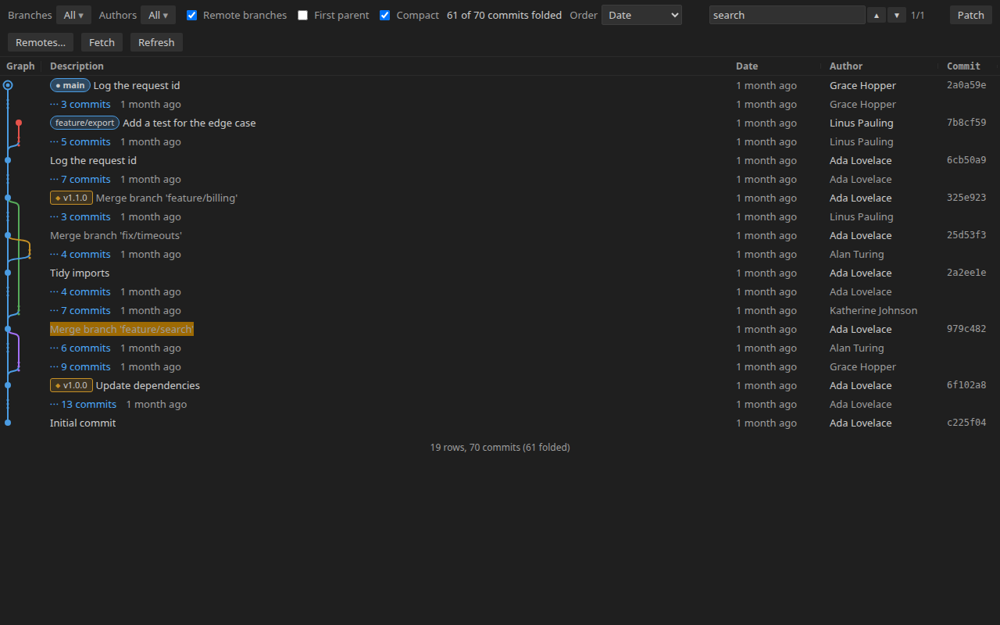

Collapse commits in a git graph
On a busy repository the branch structure is buried. A feature branch with 9 commits takes 9 rows, the main line between two merges takes 40 more, and the place where a branch split off is two screens below its merge. This page shows how to see only the shape of the history: with git in a terminal, and with a compact graph in VS Code that folds every straight run of commits into one row you can open again.
Quick answers
| I want to… | Use |
|---|---|
| See only commits that have a branch or tag on them | git log --graph --oneline --all --simplify-by-decoration |
| See one line per merged pull request | git log --first-parent --oneline main |
| See only merge commits | git log --merges --oneline |
| Fold straight runs but keep every branch, merge and fork point | Mergeline: tick Compact in the toolbar (setting mergeline.compactGraph) |
| Open one folded run | Mergeline: click its … 12 commits row, or select it and press Enter |
git log --simplify-by-decoration
git has one built-in way to hide the commits in between. --simplify-by-decoration keeps only commits that a branch, a tag or HEAD points at (git calls the ref names next to a commit its decorations), and with --graph it joins each one to the nearest kept ancestor:
git log --graph --oneline --all --simplify-by-decoration
It is useful for a quick list of where every branch and release tag is, and how they relate. Add --decorate-refs=refs/tags to keep only tagged commits, which gives a release timeline.
What it leaves out
Here is a small repository: a branch f with two commits was merged into master and then deleted, and m2 has a tag. The full graph (git 2.53):
* merge (HEAD -> master) |\ | * f2 | * f1 * | m4 |/ * m3 * m2 (tag: v1) * m1
The same history with --simplify-by-decoration:
* merge (HEAD -> master) * m2 (tag: v1)
The merged branch is gone, and so is the commit where it split off (m3) and the first commit. Branches are deleted after they are merged in most teams, so on a real repository this view shows almost none of the structure you wanted to see. It also gives no hint of how many commits each line stands for.
Other git options
--first-parentfollows only the first parent of each merge, so the main branch reads as one line of merges and direct commits. Good for “what landed on main”, but it hides every merged branch. See git log --first-parent explained.--mergeslists only merge commits, without the lines between them.--simplify-mergesand--ancestry-pathchange which commits are shown when you also give a path or a range; they do not fold straight runs.--max-countor--sinceonly shorten the list.
None of them keeps the branches and fork points while hiding the runs in between. VS Code’s own Source Control Graph has no option for it either: in VS Code 1.147 its settings are scm.graph.badges, pageOnScroll, pageSize, showIncomingChanges and showOutgoingChanges. The Git Graph extension has had this as an open request since 2020 (issue #387, “Collapsible Graph”).
A compact graph in VS Code
Mergeline is a free, MIT-licensed git graph for VS Code, Cursor and VSCodium. From version 0.18 its toolbar has a Compact checkbox. With it on, every straight run of commits becomes one row, … 12 commits, with the dates it spans and its author, and the lines still connect. The toolbar says how much is folded (“61 of 70 commits folded”).


- Open a run: click its row, or select it with the arrow keys and press Enter. Its commits appear in place and the newest one is selected. Right-click it for Show these N commits or Turn off Compact graph.
- Fold them again: click fold all next to the count in the toolbar.
- Find still works: All history in the find box searches every commit; when a match is inside a folded run, that run opens and the match is selected.
- It combines with First parent, the Branches checklist, hidden branches and both commit orders. It is off in file history and with the author filter, which already leave commits out.
- On a synthetic repository with 101,000 commits (1,000 merged branches) the first page took about 0.6 s, against about 0.3 s for the normal view, and the whole history folded into 3,002 rows.
Which commits stay
A commit stays visible when something happens there:
- a branch, remote branch or tag points at it, or it is
HEAD, or a stash was made on it; - it is a merge (two or more parents);
- it is a fork point: two or more commits have it as their parent, so a branch split off there;
- it is a first commit (no parent) or the tip of what is shown.
Every other commit has exactly one parent and one child, so the hidden commits always form straight chains, and each chain becomes one row. That is why a deleted branch keeps its own line: its fork point and its merge both stay, and the commits between them fold into one row on the side line.
FAQ
Does Compact change my repository?
No. It only changes what the graph shows. It is a VS Code setting, mergeline.compactGraph.
Can I run an action on a folded row?
No: open it first. Merge, rebase, cherry-pick and the other actions work on single commits, and a folded row stands for several.
Why is a commit with no branch on it still shown?
It is a merge, or a branch split off there. Folding it would hide where two lines meet.
Related: git log --graph reference, git log --first-parent, visualize git branches in VS Code and filter the graph by branch.